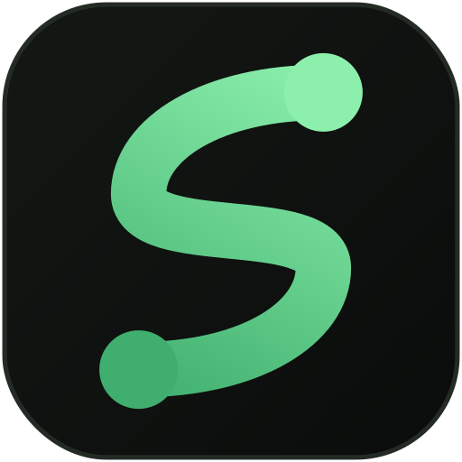

SportStageA multisport scoring app for the players, scorekeepers and organisers who make community sport happen.
Tournament details, registrations, teams and rosters, fixture plan, scorer access and sponsors, with a clear next task at each step.
Open registrations for a player pool and auction, or for existing teams. Captains can join their team with an invite link.
Build groups, set how many advance, seed the qualifiers and watch the winning bracket advance with every result.
Sport-specific scoring for six sports, shareable match links and images, and sponsors with logos and labels.
Follow SportStage for product previews
and launch updates.